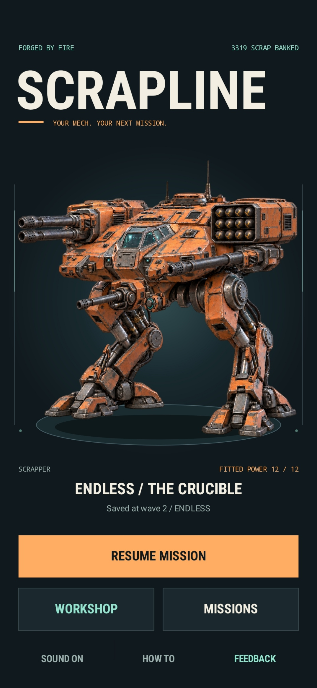
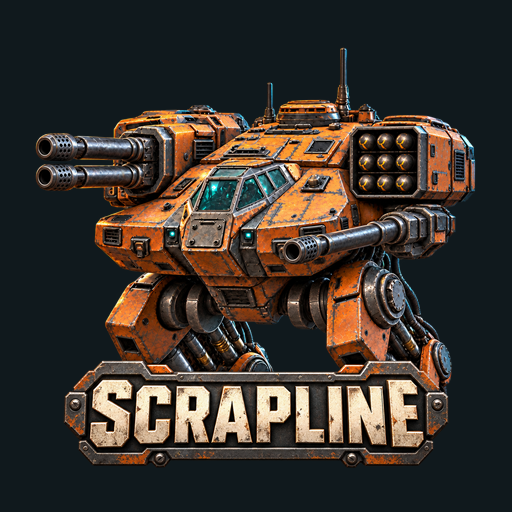
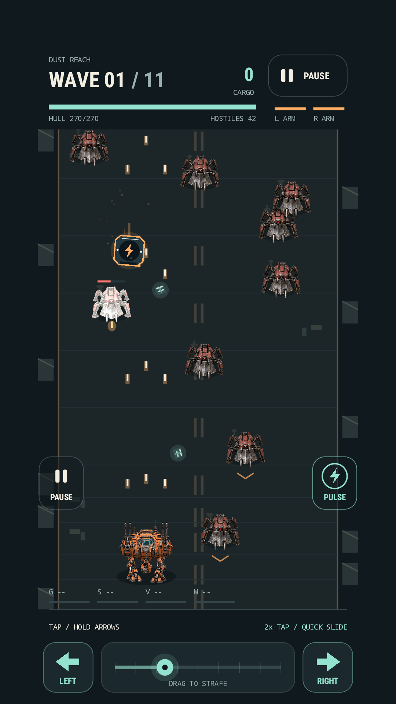
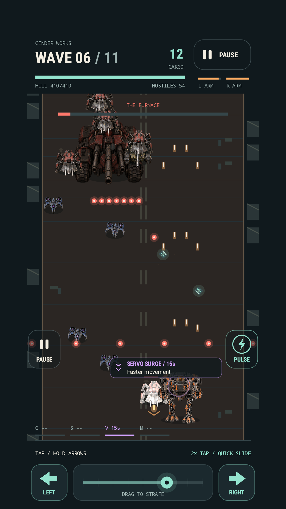
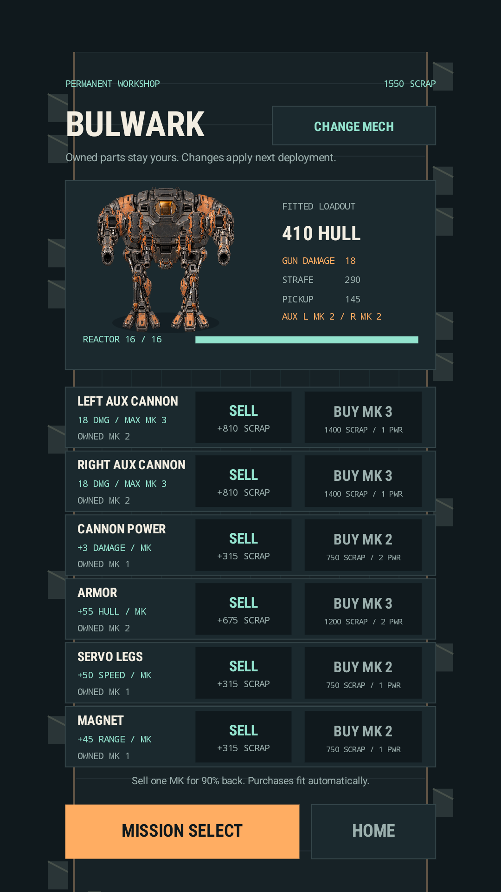
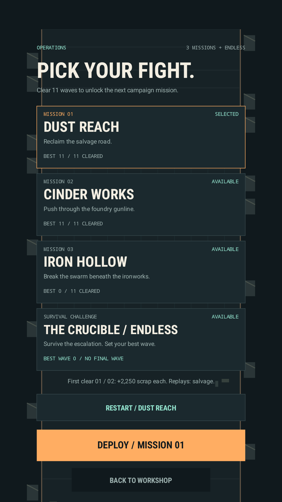

Play Instantly on Your Phone
Rotate your phone, place all six current Foundry tower types, and defend Iron Switchback through a complete thirteen-wave trial. Your trial progress stays in that browser.

Original worlds for phone and PC

Forged By Fire games are designed as complete local experiences: clear rules, meaningful progression, and worlds that reward learning how their systems work.



Android 1.0.0 · Google Play review
Your mech. Your next mission.
Enter a broken combat zone in a machine you build over time. Pilot the versatile Scrapper or earn the heavier Bulwark, fight through escalating enemy waves, recover loose scrap, and protect the cargo that funds your next permanent upgrade.
Dust Reach, Iron Hollow, and Cinder Works each deliver an 11-wave campaign with their own enemies and boss encounter. The Endless Crucible continues until your mech can fight no longer, turning every run into a new test of movement, firepower, armor, and risk.
Scrapline 1.0.0 build 24 is in Google Play review. A public store link will be added after Google approves and publishes the listing.


Free phone-browser trial · Windows and Android editions
Start immediately on your phone with no login or download. Defend Iron Switchback in the free browser trial, buy the touch-first Android edition on Google Play, or continue into the complete Windows game with four realms, 16 battlefields, and persistent local progression.


Rotate your phone, place all six current Foundry tower types, and defend Iron Switchback through a complete thirteen-wave trial. Your trial progress stays in that browser.
Defend foundry, medieval, monster, and space realms. Each realm brings its own battlefield art, routes, specialized towers, enemies, flying threats, bosses, and tactical character.
Place towers beside the route, upgrade their strengths, unlock specialists, and react to the incoming-wave preview. Pause, change battle speed, or use auto-play between waves while keeping tower decisions in your hands.
Earn experience, achievements, tower licenses, cosmetic skins, and evolving profile frames. Separate local defenders keep their own campaigns, saves, statistics, appearance, and leaderboard records.
Gameplay, complete saves, achievements, career records, and leaderboards stay on the Windows PC with no CarTrev account, advertising, analytics, or in-game purchases. Optional feedback connects only when the player chooses Send.
Android 1.0.0 · Submitted to Google Play
Scrapline's signed Android release is currently in Google Play review. The public listing is not available yet; Apple development remains planned after the Android release.
Google Play review · Mech combat
Your mech. Your next mission.
Build and refit the Scrapper or unlock the heavier Bulwark, deploy into three 11-wave missions, recover scrap under fire, and bring only collected cargo back to the workshop. Boss battles, temporary combat boosts, destructible arms, nine locally generated sound effects, and the Endless Crucible turn each run into another chance to improve the machine.
Verified Android 1.0.0 candidate: version code 24, signed production AAB, release tests passed, and a physical Android 14 smoke check completed. It is now in Google Play review; a public listing will be linked after approval. The Apple edition remains in development.


Early development · Windows PC
One people. Worlds beyond imagining.
Humans is an original offline real-time strategy game about humanity building a future across hostile realms. Gather timber and ore, establish a settlement, train an army, survive raids, expand beyond the starting ground, and adapt to worlds with different dangers and rules.
Playable foundation
The current 0.2 prototype has a complete small skirmish loop with workers, construction, production queues, fog, formations, local saves, monster dens, patrols, raids, and Ballista siege units. Cross the fords, establish a Frontier camp, weaken the raids, and break the rift.
Future realms
The Shattered Moon and the Drowned Reach are early skirmish variants for the larger multi-realm direction. Future development will give each realm distinct maps, environmental systems, opponents, and human technology before connecting expeditions into a persistent campaign.
Humans is a development prototype, not a signed installer or Store release. Difficulty, pacing, art, realm identity, and the larger campaign are still being developed and playtested.